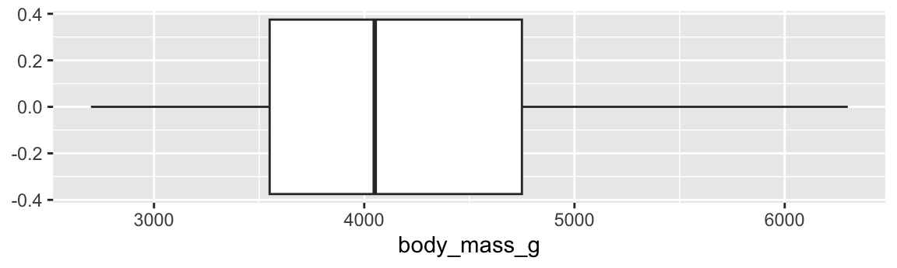
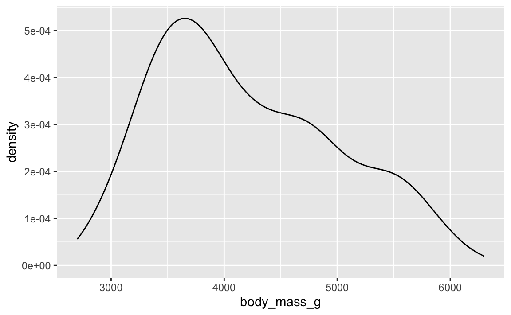
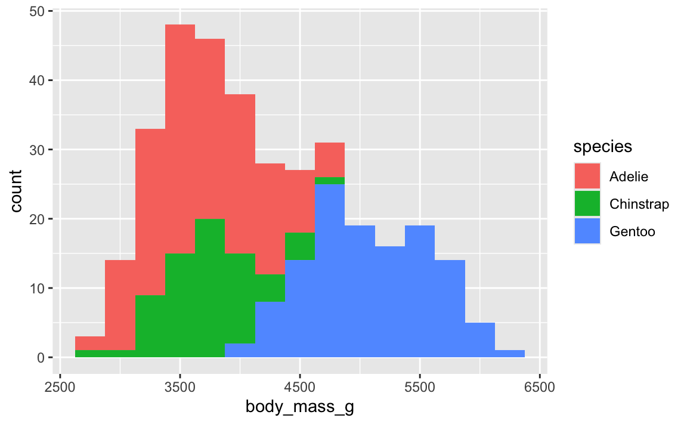
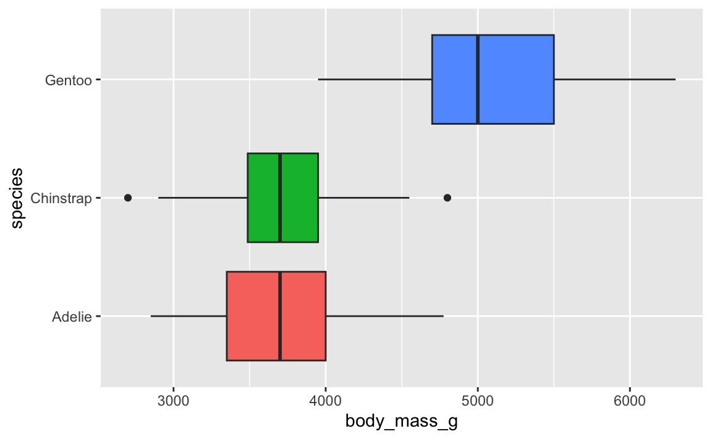
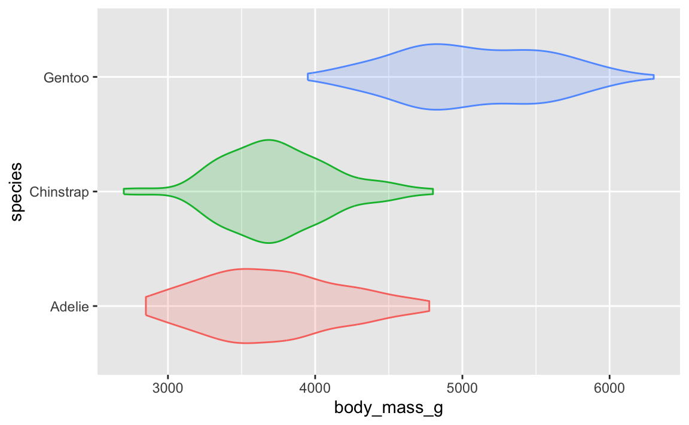
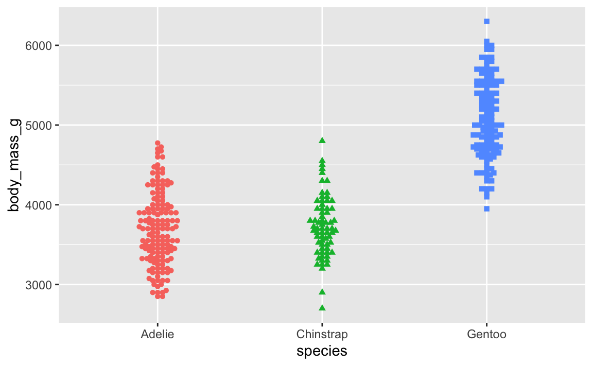
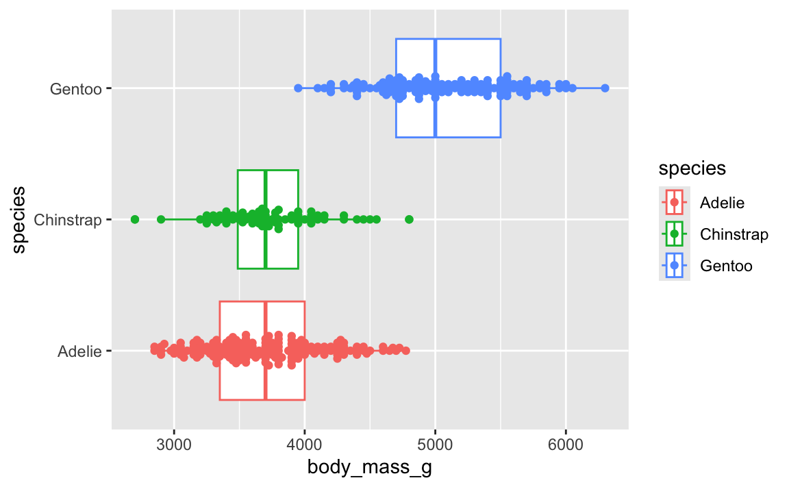
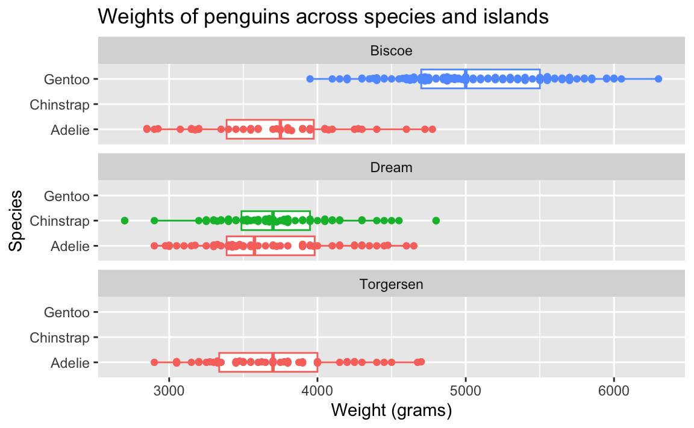

Diving deeper with Palmer Penguins (Complete)
Data visualization and transformation
Data Science with R
Introduction
How do sizes of penguins vary across species, islands, and sexes? What about other characteristics?
Packages
We will use the tidyverse and ggbeeswarm packages for data wrangling and visualization and the palmerpenguins package for the data.
Data
The dataset we will visualize is called penguins. Let’s glimpse() at it.
glimpse(penguins)Rows: 344
Columns: 8
$ species <fct> Adelie, Adelie, Adelie, Adelie, Adelie, Adelie, Adel…
$ island <fct> Torgersen, Torgersen, Torgersen, Torgersen, Torgerse…
$ bill_length_mm <dbl> 39.1, 39.5, 40.3, NA, 36.7, 39.3, 38.9, 39.2, 34.1, …
$ bill_depth_mm <dbl> 18.7, 17.4, 18.0, NA, 19.3, 20.6, 17.8, 19.6, 18.1, …
$ flipper_length_mm <int> 181, 186, 195, NA, 193, 190, 181, 195, 193, 190, 186…
$ body_mass_g <int> 3750, 3800, 3250, NA, 3450, 3650, 3625, 4675, 3475, …
$ sex <fct> male, female, female, NA, female, male, female, male…
$ year <int> 2007, 2007, 2007, 2007, 2007, 2007, 2007, 2007, 2007…Visualizing penguin weights
Single variable
Analyzing the a single variable is called univariate analysis.
Create visualizations of the distribution of weights of penguins.
Exercise 1
Make a histogram. Set an appropriate binwidth.
ggplot(penguins, aes(x = body_mass_g)) +
geom_histogram(binwidth = 250)Exercise 2
Make a boxplot.
ggplot(penguins, aes(x = body_mass_g)) +
geom_boxplot()
Exercise 3
Based on these, determine if each of the following statements about the shape of the distribution is true or false.
- The distribution of penguin weights in this sample is left skewed. FALSE
- The distribution of penguin weights in this sample is unimodal. Difficult to determine, FALSE
ggplot(penguins, aes(x = body_mass_g)) +
geom_density()
Two variables
Analyzing the relationship between two variables is called bivariate analysis.
Create visualizations of the distribution of weights of penguins by species.
Exercise 4
Make a single histogram. Set an appropriate binwidth.
ggplot(penguins, aes(x = body_mass_g, fill = species)) +
geom_histogram(binwidth = 250)
Exercise 5
Use multiple histograms via faceting, one for each species. Set an appropriate binwidth, add color as you see fit, and turn off legends if not needed.
ggplot(penguins, aes(x = body_mass_g, fill = species)) +
geom_histogram(binwidth = 250) +
facet_wrap(~species, ncol = 1)Exercise 6
Use side-by-side box plots. Add color as you see fit and turn off legends if not needed.
ggplot(penguins, aes(x = body_mass_g, y = species, fill = species)) +
geom_boxplot(show.legend = FALSE)
Exercise 7
Use density plots. Add color as you see fit.
ggplot(penguins, aes(x = body_mass_g, fill = species, color = species)) +
geom_density(alpha = 0.5)Exercise 8
Use violin plots. Add color as you see fit and turn off legends if not needed.
ggplot(penguins, aes(x = body_mass_g, y = species, color = species, fill = species)) +
geom_violin(alpha = 0.2, show.legend = FALSE)
Exercise 9
Make a jittered scatter plot. Add color as you see fit and turn off legends if not needed.
set.seed(1234)
ggplot(penguins, aes(x = species, y = body_mass_g)) +
geom_jitter(alpha = 0.5)Exercise 10
Use beeswarm plots. Add color as you see fit and turn off legends if not needed.
ggplot(penguins, aes(x = species, y = body_mass_g, color = species, shape = species)) +
geom_beeswarm(show.legend = FALSE)
Exercise 11
Use multiple geoms on a single plot. Be deliberate about the order of plotting. Change the theme and the color scale of the plot. Finally, add informative labels.
ggplot(penguins, aes(x = body_mass_g, y = species, color = species)) +
geom_boxplot() +
geom_beeswarm()
Multiple variables
Analyzing the relationship between three or more variables is called multivariate analysis.
Exercise 12
Facet the plot you created in the previous exercise by island. Adjust labels accordingly.
ggplot(penguins, aes(x = body_mass_g, y = species, color = species)) +
geom_boxplot(show.legend = FALSE) +
geom_beeswarm(show.legend = FALSE) +
facet_wrap(~island, ncol = 1) +
labs(
x = "Weight (grams)",
y = "Species",
title = "Weights of penguins across species and islands"
)
Before you continue, let’s turn off all warnings the code chunks generate and resize all figures. We’ll do this by editing the YAML.
Visualizing other variables
Exercise 13
Pick a single categorical variable from the data set and make a bar plot of its distribution.
# add code hereExercise 14
Pick two categorical variables and make a visualization to visualize the relationship between the two variables. Along with your code and output, provide an interpretation of the visualization.
Add interpretation here.
# add code hereExercise 15
Make another plot that uses at least three variables. At least one should be numeric and at least one categorical. In 1-2 sentences, describe what the plot shows about the relationships between the variables you plotted. Don’t forget to label your code chunk.
Add interpretation here.
# add code here